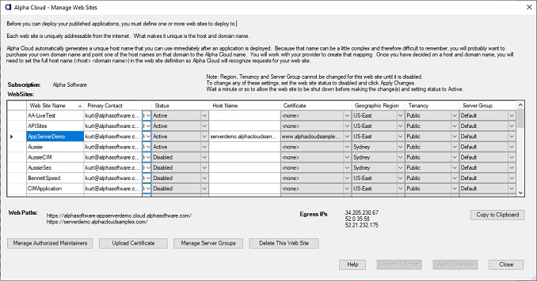

Alpha Cloud - Alpha Anywhere Developer's Guide
Overview
Web Site Properties
Managing Your Web Sites from Within Alpha Anywhere
Web sites define where your web applications will run and how your users will access them.
A web site can run multiple applications.
Each application is assigned to a web site and identified with a virtual path that is added to the URL that would be used for the root application ("/").
For example, if you have a root application and an application called "Accounting" and your web site is accessed with the URL "http://myhost.mycompany.com",
the accounting application would be referenced using the URL "http://myhost.mycompany.com/Accounting".
Each web site has the following properties:
- Name
- A unique identifier within your subscription.
- Status
- Either "Active" or "Disabled".
Note: Disabling a web site will shut down all applications deployed to it.
- Primary Contact
- The individual who should be contacted regarding issues with the site.
- Host Name
- The host and domain name for IIS to listen for in addition to the automatically generated DNS address Alpha Cloud creates and manages.
The host name is optional. You can run your web site using the name generated by Alpha Cloud if you wish.
This is the name of the host and domain you register with your DNS provider.
This name must be globally unique across the internet and will not be effective until you update your DNS entries.
See Managing Domains.
- Service
- Determines whether users access your site using HTTP, HTTPS or both.
If you use only the automatically generated DNS name, Alpha Cloud manages both the DNS name and the SSL certificate.
If you set a host name and enable SSL, you must also provide a certificate.
- Certificate
- Select a certificate you have uploaded that matches the host name your provided.
If you provide a host name of your own, you must upload a valid certificate in order to support SSL.
The certificate will be installed on deployed servers automatically.
To upload a new certificate, click on the button entitled "Upload Certificate".
For more information on uploading certificates see Uploading Certificates.
- Geographic Region
- The geographic region you want to deploy your web site in.
Choose the region your web site should be deployed in.
Note: For best response, make sure your database and storage objects are deployed in the same region as your web site.
- Tenancy
- Tenancy determines how your web site will be grouped with other web sites on the Alpha Cloud.
- Public - The web site will share virtual machines with any other web sites deployed on the Alpha Cloud.
- Subscription - The web site will share virtual machines ONLY with other web sites belonging to the same subscription and assigned to the same server group.
The tuning parameters for the server group will be taken from the common server group object.
- Single - The web site will be assigned to its own virtual machines. The tuning parameters will be taken from the referenced server group.
- Server Group
- The group (as described above) that the web site is assigned to.
For more information on server groups, see Managing Server Groups.
- Click on the Alpha Cloud toolbar icon in the web control panel and select "Advanced" and then "Web Sites" from the drop down menu.

- To add a new web site, click in the empty row at the bottom of the grid.
- Enter a name for your new web site>
- The default status is "Active", but you can choose to create the web site with a "Disabled" status.
- The default primary contact is the subscription primary contact, but you can change it.
- Select the values for each of the other properties as described above.
- To change the properties of an existing web site, make the changes right in the grid.
- When you have finished making changes, click "Apply Data" to update the cloud.
- If you need to upload a certificate, click the button entitled "Upload Certificate".
For more information on uploading certificates see Upload Certificate.
When you have uploaded your certificate you can set the host name, service and select your new certificate to support SSL for your own domain name.
- If you need to create or make changes to a server group, click the button entitled "Manage Server Groups".
For more information on server groups, see Managing Server Groups.
- Once you have saved a new web site, you can authorize additional users to manage and publish the application by clicking on the button entitled "Manage Authorized maintainers".
For more information on authorized maintainers see Delegating Access.

View a Full Sized Image
Note: All valid web paths are displayed near the bottom of the dialog for the selected web site.
You can copy any of the paths to the clipboard and paste them into a browser to access your deployed applications.
{kind=link}